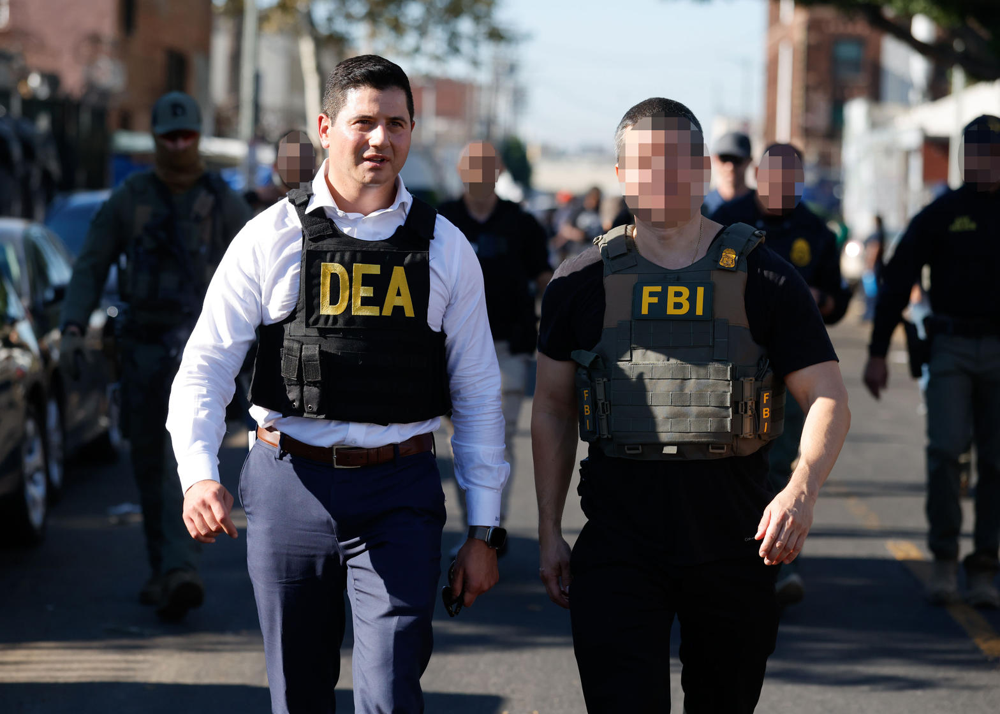
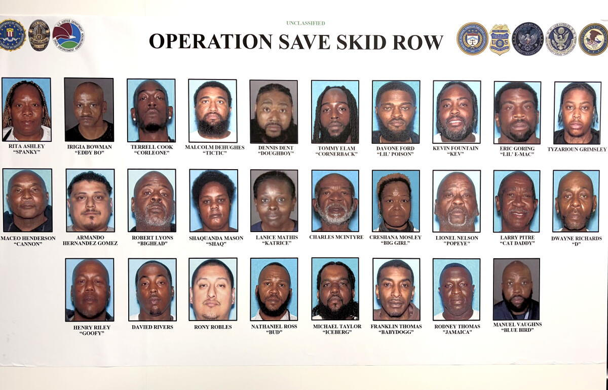
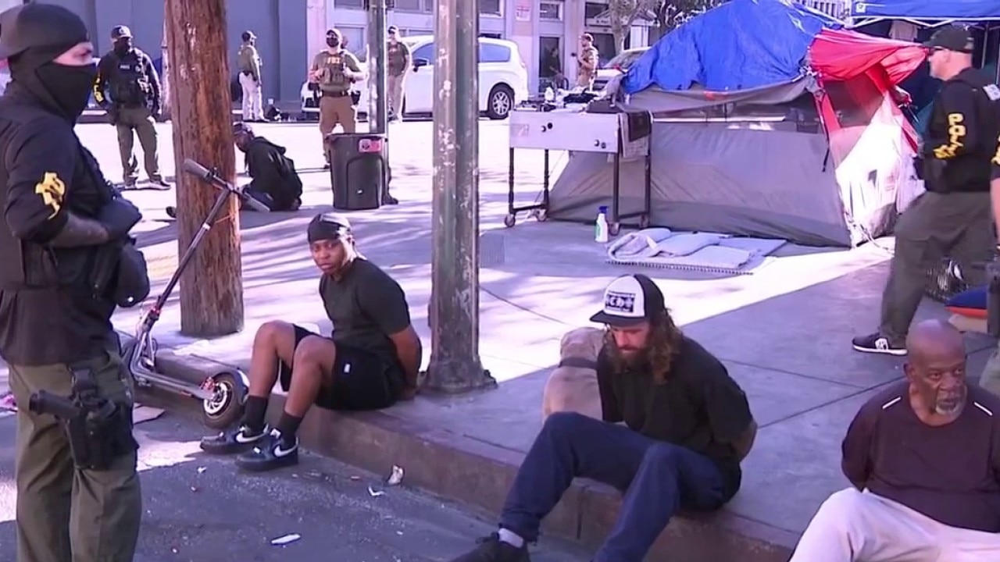
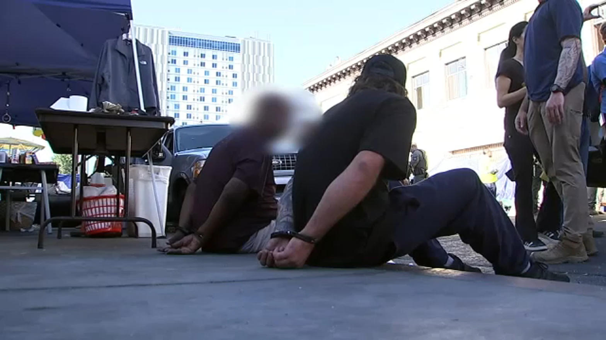
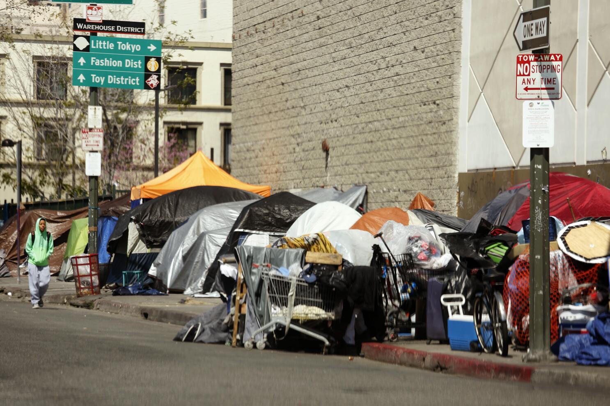

The Operation
On Thursday, October 8, 2026, a Homeland Security Task Force swept Skid Row and surrounding areas in a coordinated takedown of street-level and mid-level drug distributors. The operation, referred to by officials as Operation Save Skid Row or Operation Free Skid Row, followed months of investigation using phone taps, undercover officers, and surveillance.
Agents searched approximately 20 residences—most outside Skid Row itself—along with several tents inside the neighborhood. Seizures included firearms, bulk currency, suspected methamphetamine, cocaine, cocaine base, pills, and luxury vehicles. Centers of activity included the intersection of 5th and Crocker and nearby parks such as Gladys Park.
First Assistant United States Attorney Bill Essayli stated that the dealers “targeted the homeless in Skid Row, kept them addicted on drugs like PCP, and took their public assistance money for payment.” FBI Assistant Director in Charge Patrick Grandy called the traffickers “the single largest driver of violent crime in the Skid Row area of Los Angeles.”

Tactics and Targets
Court documents and official statements describe a consistent pattern. Dealers used tents and makeshift structures as storefronts rather than homes. Some dressed in dirty clothing to appear homeless or wore clothing resembling social workers. Others employed local residents as lookouts in exchange for drugs. Supplies were often stored in vehicles, single-room occupancy units, or properties registered to other people. Several defendants lived outside Skid Row and arrived in high-end cars.
Named defendants in the DEA release include Rodney Thomas (a.k.a. “Jamaica”), Charles McIntyre, Dwayne Richards, Manuel Vaughns (identified as a Raymond Avenue Crip of West Covina), Larry Pitre (a.k.a. “Kat Daddy” of Studio City), Lionel Nelson (a.k.a. “Popeye” of Watts), and others. LAPD Chief Jim McDonnell noted involvement by Main Street Crips and described some of the enterprises as generational.
DEA Special Agent in Charge David Olesky said the traffickers “operated in plain sight” and “bet on our apathy.” Officials repeatedly emphasized that the operation targeted dealers, not the unhoused population.


Local Context
Skid Row spans roughly 50 blocks in downtown Los Angeles and has long been characterized by high rates of homelessness, addiction, and open-air drug sales. Authorities state that the dealers controlled territory ranging from single corners to entire blocks and used violence to protect it. This takedown follows a similar operation earlier in 2026 targeting MacArthur Park. Officials described Thursday’s action as “just the beginning” of ongoing enforcement.

Sources
- DEA Press Release: 23 Skid Row Drug Dealers Arrested (October 8, 2026)
- Statements from First Assistant U.S. Attorney Bill Essayli, FBI ADIC Patrick Grandy, DEA SAC David Olesky, and LAPD Chief Jim McDonnell
- Reporting by New York Post, NBC Los Angeles, FOX 11 Los Angeles, and official X accounts of FBI Los Angeles and DEA Los Angeles
- Court documents referenced in official releases describing tent-based distribution, disguises, and gang affiliations
Closing Reflection
Enforcement against those who exploit the most vulnerable is a necessary piece of any response to open-air drug markets. Whether this operation produces lasting change on Skid Row will depend on sustained follow-through, treatment access, and accountability for the networks that profit from addiction. The record shows what happens when dealers are left to operate in plain sight.